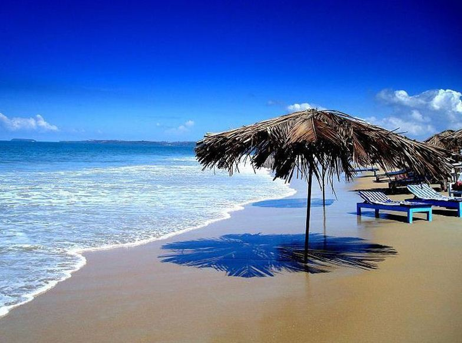
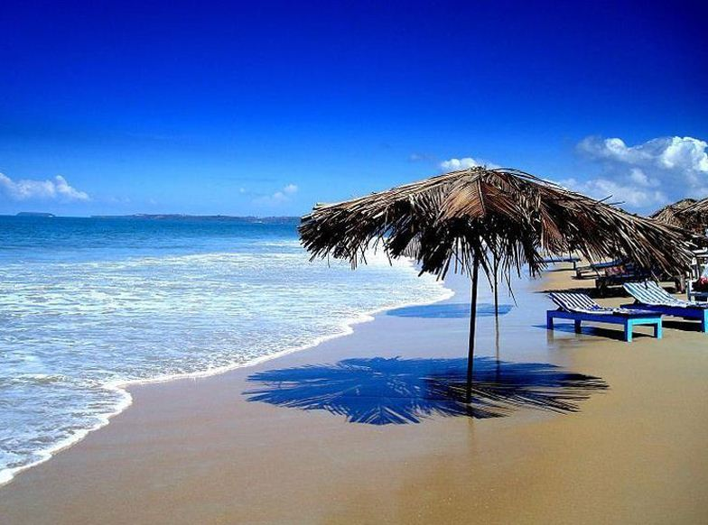

About Goa
Goa, state of India, comprising a mainland district on the country’s southwestern coast and an offshore island. It is located about 250 miles (400 km) south of Mumbai (Bombay). One of India’s smallest states, it is bounded by the states of Maharashtra on the north and Karnataka on the east and south and by the Arabian Sea on the west. The capital is Panaji (Panjim), on the north-central coast of the mainland district. Formerly a Portuguese possession, it became a part of India in 1962 and attained statehood in 1987.
In those tumultuous and rebellious times in the sixties, it was then not the ‘sweet betel’ that was the prime attraction but a different kind of ‘weed’. But Goa, since those days of the angry generation, has moved on to attract a multitudinous, peaceful and cosmopolitan school of visitors from all around the globe. Down the corridors of time Goa has been different things to different people. To the Portuguese conquerors it was ‘Golden Goa’, the El Dorado, the ‘Rome of the East’. Such was its beauty and grandeur, that a traveller was moved to remark: ‘Whoever has seen Goa, need not visit Lisboa’-Lisbon, which was then the grand epicenter of the Portuguese dominions.
In the sixties and seventies, it was, as we have remarked, a haven for the hippies. Since then Goa has moved on to fullfledged Statehood, its own Council of Ministers, a magnificent new Assembly complex, its citizens among the most literate in the country with a per capita income the highest in the land. At the hub of this prosperity, is the Tourism industry. At the Goa Tourism Development Corporation (GTDC), we take a humble bow in acknowledgement, in some small measure, of putting Goa on the tourist map of our country.
‘Now our road takes us to the magnificent kingdom of Goa.The people of this kingdom are strong, prudent and very hardworking. The kingdom of Goa is the most important in India.It is civilized, having famous orchards and water. It is the coolest place in India and it is the most plentiful in foodstuffs’. ‘The white people make a practice of going to the kingdom of Goa to enjoy the shade and the groves of trees and to savour the sweet betel.’
To fill the Trip Booking Form Click Here.
For more detailed information, you can visit Wikipedia.